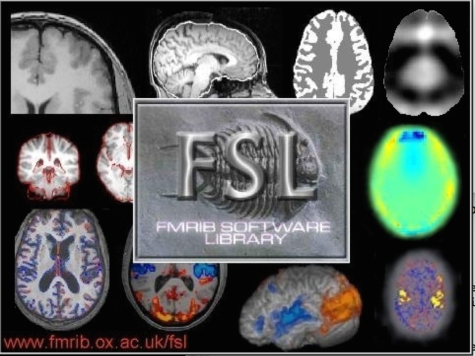
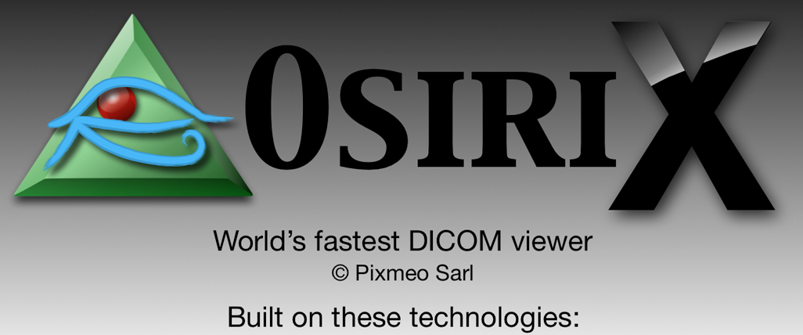
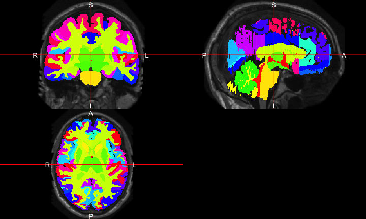

R is a language and environment
for statistical computing
and graphics.
https://cran.r-project.org/
R is a base set of foundational functions

With by user-written packages of functions

Benefits of R
- Free, open-source
- Cross-platform
- Over 11000 packages
- Taught by stat/biostat departments
- Packaging system is good (well-documented, tested, relatively-understandable)
- RStudio - company and software
Everything that exists is an object.
Everything that happens is a function call.
(Chambers 2014)
For example:
library(neurobase)
library(fslr)
img = readrpi("anat.nii.gz", verbose = FALSE)
Plotting orthographic
ortho2(img)
Workflow for an Analysis
- bash

- FSL 
- ANTs

- MRIcroGL

- OsiriX 
- SPM 12


Workflow for an Analysis
Multiple pieces of software used
- all different syntax
It’s typical to have lots of software choices

Carp, Joshua. “The secret lives of experiments: methods reporting in the fMRI literature.” Neuroimage 63.1 (2012): 289-300.
My Goal:
Lower the bar to entry
- all R code
- pipeline tool
- “native” R code
Complete pipeline
- preprocessing and analysis

What did R have?
https://imgflip.com/memegenerator/Grandma-Finds-The-Internet
What did R have?

Bioinformatics Repository: Bioconductor
Bioinformatics Repository: Bioconductor

- centralized bioinformatics/genomics packages
- large community/number of packages (> 1300)
- published tutorials and workflows
- additional requirements to CRAN (e.g. packages need vignettes)
Bioinformatics Repository: Bioconductor
- team of developers/maintainers
- multiple grants of support
Python Framework: NiPy 
- integrates multiple neuroimaging software
- standardizes the syntax
- provides workflows
- allows the user to take advantage of all of Python
- pandas, scikit-learn, Jupyter notebooks
Introducing

An R Platform for
Medical Imaging Analysis
What is Neuroconductor?
- A community of developers and users of R packages for imaging
- A website https://neuroconductor.org/.
- with tutorials and help
- A team helping developers and users (John, Adi Gherman, Ciprian Crainiceanu, Brian Caffo)
- A centralized repository of maintained packages
Goal: Centralize the packages (currently 56)

Neuroconductor Goal:
Detailed tutorials on how to actually perform an analysis

Using R as a Pipeline Tool: fslr
fslrpackage - call FSL from R- Requires FSL to be installed and in PATH
- FSL only available on Unix-style systems

Why not CRAN: The story of ANTsR
ANTs: Advanced Normalization Tools
- State-of-the-art image processing pipelines
- Built at UPenn under Brian Avants
- Group has won challenges for imaging analysis
- Still actively maintained and developed
- Depends on the Insight ToolKit (ITK) medical image processing library
The story of ANTsR: Porting ANTs to R
- Group tried to wrap C++ code with Rcpp for it to work “seamlessly” with R
- Had some issues with CRAN
- Most developers response: “just make it work”
- NOT like
fslr- this built the libraries and could be called using.Call- possible (not yet) to use on Windows
Why not CRAN: Dependencies
- ANTsR depends on
CMake:
- ANTsR also depends on ITKR - large code base
- External dependencies are not always welcome
- CRAN response: (more or less)
Why not CRAN: Checks
- We would like more stringent checks than CRAN (like vignettes) like Bioconductor
- But also more lenient ones
- Examples may take > 5 seconds to compile
- Time to build package may take a while
- May not work on Windows if not applicable
Why not CRAN: Data
Medical images are big (> 5 mb) compared to code
CRAN doesn’t like this
- Example data packages are harder to get passed
- We got
kirby21.t1andkirby21.fmri, but they have an implicit downloader function in the code - Necessary for testing code examples in imaging
- STANDARDIZED file location (
system.file)
- STANDARDIZED file location (
Solution: Build a Bioconductor-like Solution using Current Tools
Git and GitHub
Git version control system: stores changes of files

- GitHub is an online server of repositories
Distribute packages and install them via
devtools::install_github

Continuous Integration: Travis and Appveyor
- Builds and checks R packages on Windows (Appveyor) and Linux/OS X (Travis CI)
- Works well with GitHub


Development Pipeline:
Check the package for stability
- check against other imaging software (e.g. FSL)

ANTsR Revisited: Helping Developers
- GitHub allows the Neuroconductor team to help fix issues
- Standardized ANTsR checking for NeuroC
- Pull Requests to Group ICA package (Brian Caffo)
- Remove unnecessary hurdles for developers
Neuroconductor Capabilities
| Capabilities | Packages |
|---|---|
| DICOM Images | oro.dicom, dcm2niir, divest, ANTsR |
| NIfTI Images | oro.nifti, RNifti, ANTsR |
| Image Registration | spm12r, fslr, ANTsR, freesurfer |
| Inhomogeneity Correction | spm12r, fslr, ANTsR |
| Brain Extraction | spm12r, fslr, ANTsR, extrantsr |
| Structure Segmentation | spm12r, fslr, ANTsR, extrantsr, freesurfer |
| Intensity Normalization | WhiteStripe, neurobase, ANTsR |
| 3D Smoothing | ANTsR, spm12r, fslr |
| Temporal Filtering | spm12r, fslr, ANTsR |
| Slice-timing correction | spm12r, fslr |
| DTI models | rcamino, oro.dti, fslr |
Benefits of Neuroconductor:
Allow imaging to use all R has to offer:
- Statistics and Machine Learning
- Versioning and testing
- Reproducibile reports and analyses
- Shiny (web applications)
- Genomics/Imaging analysis in one platform
- Bioconductor
 Neuroconductor Downsides
Neuroconductor Downsides
- More control over the workflow = more work
- Users need external software (versions/installation)
- No control over external software
- if maintainer changes something, not much recourse
- Need the content (buy-in from the community)
Potential Neuroconductor Downsides:
Enabling statisticians to do preprocessing also enables imagers to do advanced statistics.
- Why enlist us for only this part?

Training we are providing
https://www.coursera.org/learn/neurohacking/
Neuroimaging analysis within R (ISBI, Melbourne, April 2017)
ENAR 2018
Without Knowing the Processing,
Analyses Cannot be Trusted
No Code = No Method
Current Neuroconductor Packages Overviews
dcm2niir and divest: Converting DICOM data
dcm2niiby Dr. Chris Rorden- jackknife for almost any DICOM type to NIfTI
dcm2niirwraps a binary executable of dcm2nii- calls the command prompt (not always Windows-friendly)
divestwraps the background C++ code of dcm2nii- runs in “native” R
neurohcp: Human Connectome Project
- Allows you to download data from Human Connectome Project
- The 1200 Subjects release: behavioral and 3T MR imaging data from 1206 healthy young adult participants. Standardized protocol.
- Tutorial: http://johnmuschelli.com/neuroc/neurohcp
rcamino: Port of Camino Software
- Wraps Camino Diffusion MRI Toolkit
- Takes in b-values, b-vectors, and tensors
- Fits models for DTI data
- http://johnmuschelli.com/neuroc/DTI_analysis_rcamino/index.html
extrantsr: Extra functions for ANTsR
- Wraps
ANTsRfunctions for nifti objects (from oro.nifti) malffunction - performs a basic MALF algorithmwithin_visit_registration- performs within-visit registration for structural MRIpreprocess_mri_within- pipeline to process within-visit sMRI
malf.templates: Segmented T1-weighted Images
- Data from the MICCAI 2012 Challenge on Multi-atlas Labelling Data
- From OASIS project and the labeled data as provided by Neuromorphometrics, Inc. (http://Neuromorphometrics.com/)
- Have T1-weighted image, brain mask, image with mask applied, substructure segmentation
- Hand segmented structures - useful for multi-atlas label fusion (MALF)
malf.templates: segmented T1-weighted images

MALF: Skull Stripping Example
From (Doshi et al. 2013):

- Register templates to an subject T1
- Apply transformation to the label/mask, average over voxels
- there are “smarter” (e.g. weighted) ways
Neuroconductor installer:
Provide an installer to download the current packages:
source("https://neuroconductor.org/neurocLite.R")
neurocLite("kirby21.fmri")
neurocLite("neurobase")
neurocLite("ANTsR")
kirby21.fmri: fMRI data from Kirby21
library(kirby21.t1) # load T1 data
library(kirby21.fmri) # load fMRI data
library(kirby21.base) # helper package to download data
library(neurobase) # neuroconductor base package
fnames = get_image_filenames_list(
modalities = c("fMRI", "T1"), id = 113, visit = 1)
print(fnames)
t1_fname = fnames$T1
fmri_fname = fnames$fMRI
fMRI
"library/kirby21.fmri/visit_1/113/113-01-fMRI.nii.gz"
T1
"library/kirby21.t1/visit_1/113/113-01-T1.nii.gz"
Plot the T1
spm12r: Wrapper Functions for SPM
- Wraps some
MATLABcode to call SPM scripts - Using
Rsyntax (but cheating bcMATLABruns the code) - Built from SPM batch commands
spm12_slice_timing- slices are not taken instantaneouslyspm12_realign- people movespm12_coregister- structural imaging is higher resolutionspm12_segment- where’s the gray matter?spm12_normalize- brains look better in MNIspm12_smooth- turn that noise down
Resources
https://neuroconductor.org/neuroc-help - tutorials
https://neuroconductor.org/courses - courses
http://www.brainmapping.org/NITP/images/Summer2011Slides/NITP2011_ExperimentalDesign_II_print.pdf - task-fMRI specific
References
Chambers, John M. 2014. “Object-Oriented Programming, Functional Programming and R.” Statistical Science 29 (2). Institute of Mathematical Statistics: 167–80.
Doshi, Jimit, Guray Erus, Yangming Ou, Bilwaj Gaonkar, and Christos Davatzikos. 2013. “Multi-Atlas Skull-Stripping.” Academic Radiology 20 (12). Elsevier: 1566–76.